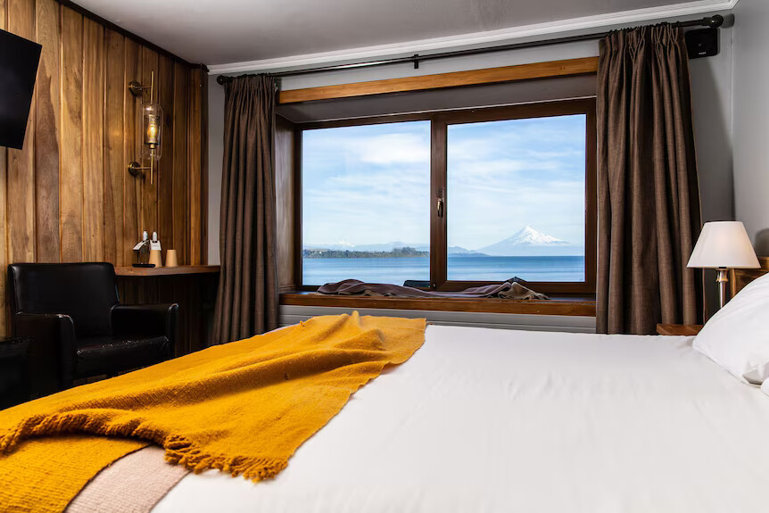

Conference-area hotels
A curated list of hotels near Hotel Bellavista and central Puerto Varas will be added after confirmation by the organizing team.

ICH2026 Venue & Travel
The 2026 meeting will take place in the Hotel Bellavista, Puerto Varas.
How to get to Puerto Varas

Hotels
A curated list of hotels near Hotel Bellavista and central Puerto Varas will be added after confirmation by the organizing team.
Recommended hotels near Arturo Merino Benitez International Airport (SCL) will be added for participants who need an overnight connection before flying to Puerto Montt.
International arrival
Most international travelers will arrive at Arturo Merino Benítez International Airport (SCL) in Santiago, Chile.
Tip: Allow at least 2-3 hours for connection time, especially if arriving from long-haul international flights.
Alternatively, you may prefer to make a stop-over in Santiago. The Santiago transfer contact below is for SCL airport transfers and can be useful for overnight stays before the domestic flight to Puerto Montt. A curated list of hotels near Santiago airport will be added once confirmed by the organizing team. It is also possible to book day trips to diverse destinations, close to, or in Santiago.
Domestic connection
From Santiago, take a domestic flight to El Tepual Airport (PMC) in Puerto Montt.
Tip: Puerto Montt is the main gateway to the Los Lagos region and Puerto Varas.
Airport transfer
Puerto Varas is located approximately 20-30 km from the airport, with a travel time of about 25-30 minutes depending on traffic.
Upon arrival at the airport, you will find several transportation options.
For the Puerto Montt to Puerto Varas route, participants can review the Survip transfer. For participants spending a night in Santiago, the SCL transfer service is available through Airport Transfer, WhatsApp +56976053701, or reservas@trasladoaeropuerto.cl.
Taxis and transfers are the most convenient options for international travelers.
Final destination
Puerto Varas is a scenic lakeside city located in southern Chile, known for:
Travel resources